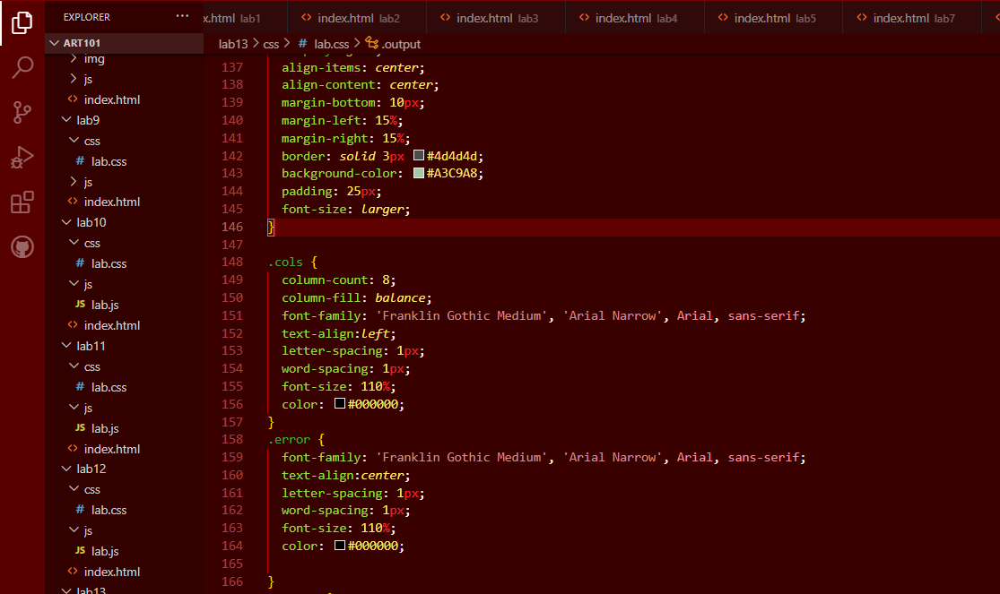

The Challenge for this lab was to experiment with debugging while working with a partner.
Problems
I did not have really any issues with this lab! I actually didnt have much to debug period.
Debugging
Lab 13 Debug

I haven't actually had any labs that needed to be truly debugged, everything works more or less. So I just fixed the formatting of Lab 13's output so it looked a lot nicer, as well as added a cap to the max number, so it wont go past 500.